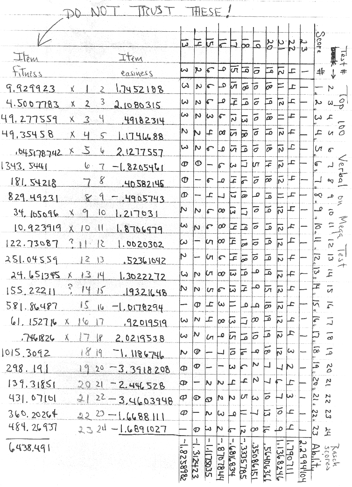
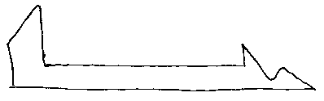

Reproducing Grady Towers' Norming of the Mega Test
Journal articles reprinted with permission from Grady M. Towers
Introduction
Playing with the Calibration
Excel 7.0 (for Windows 95) spreadsheet with my numbers for Grady's sample matrix
Excel 7.0 (for Windows 95) spreadsheet with my numbers for the entire (519 person) data set (2.0 MB)
or if you prefer a smaller file, the spreadsheet above in zip format (500 kB)
Introduction
In In-Genius # 25, January 1991 (the journal of the Top One Percent Society), Grady Towers presented a norming of the Mega Test as follows:
"Scores below 13 or above 36 have so much error in them that they are useless for all practical purposes. Also, note that many raw scores have equivalent IQs. That's because there were several modes in the norming data: Important modes can be found at IQ levels of 141, 150, 159, and 167, while two minor modes may possibly exist at 123 and 174, though data for these last two are too uncertain to be sure.
These norms agree quite closely with Dr. Hoeflin's third norming of the Mega Test, particularly between the raw scores of 11 and 38, the most reliable interval of the test. It may come as a surprise to most readers, but these are actually conservative norms; the true ceiling for the Mega Test may actually be higher than that shown here.
Incidentally, these norms were arrived at by a set of psychometric techniques called logistic latent trait analysis. This particular variant of logistic latent trait analysis was developed by George Rasch, a Danish psychometrician, and the computational procedures were developed at the University of Chicago by Benjamin Wright and Narjis Panchapakesan. This variant of logistic latent trait analysis is to classical test construction techniques what quantum mechanics is to phlogiston.
I recommend a cutoff score of 22 for the Triple Nine Society, 31 for the Prometheus and Four Sigma Societies, and 41 for the Mega Society.)"
| Towers' Norms for the Mega Test | ||||
| 47 | 200 | 24 | 152 | |
| 46 | 198 | 23 | 152 | |
| 45 | 196 | 22 | 150 | |
| 44 | 192 | 21 | 150 | |
| 43 | 190 | 20 | 150 | |
| 42 | 183 | 19 | 150 | |
| 41 | 182 | 18 | 147 | |
| 40 | 182 | 17 | 147 | |
| 39 | 182 | 16 | 143 | |
| 38 | 174 | 15 | 141 | |
| 37 | 174 | 14 | 141 | |
| 36 | 170 | 13 | 141 | |
| 35 | 169 | 12 | 137 | |
| 34 | 168 | 11 | 135 | |
| 33 | 168 | 10 | 132 | |
| 32 | 168 | 9 | 129 | |
| 31 | 165 | 8 | 128 | |
| 30 | 165 | 7 | 128 | |
| 29 | 162 | 6 | 123 | |
| 28 | 159 | 5 | 123 | |
| 27 | 159 | 4 | 120 | |
| 26 | 156 | 3 | 120 | |
| 25 | 155 | 2 | 115 | |
| 1 | 113 | |||
In a letter from me to Grady, I requested his permission to publish this norming. He responded as follows:
5-24-98
Dear Mr. Miyaguchi,
Why depend on my norms when you can work them out for yourself? I've given you everything you need.
The idea is simple: for every raw score there is an associated Rasch score (ability estimate). Rasch scores are on a rigid interval scale even when the raw scores are not! If an IQ can be assigned to any two Rasch scores, then IQ scores can be calculated for all other Rasch scores. Then you drop the Rasch scores and end up with a raw score - IQ score correspondence.
You start with a person x item score matrix, then you convert it to a score by item matrix. I've included a score by item score matrix of the verbal scores for the top 100 scores on the Mega Test just to show you what the data setup for the computer program I wrote looks like. It is not what I used to norm the Mega Test. That was a much bigger data set.

You have my permission to "publish" anything I've ever written for any high IQ journal -- but not any of the magazines or books I've written for.
Grady M Towers
P.S. There's something wrong with the item fitness procedure (p44-45) 1, or I made a mistake when I wrote my computer program. All the rest works.
1 Grady is referring to an article he sent me called, "A Procedure for Sample-Free Item Analysis," by Benjamin Wright and Nargis Panchapakesan (University of Chicago), in Educational and Psychological Measurement, 1969, 29, 23-48. I requested permission from Sage Publications Inc., the publishers of this journal, to reproduce this article at my site, but that request was denied.
I have gone through the article and have come up with numbers that differ from Grady's. I have made my spreadsheet available for inspection (see link at top of page), but I'm afraid it will be all but undecipherable without reference to the aforementioned paper.
In a followup letter, Grady wrote:
5-25-98
Dear Mr. Miyaguchi,
An addendum to what I've already sent to you.
By now you've had a chance to examine the Rasch scores I derived and the probable IQs I obtained from them. It has almost certainly occurred to you that, for a method that is supposed to produce rigid interval scaling, both scores and IQs look very very fuzzy. The truth is, considering the incredibly bad data I had to work with, the results were amazingly good.
About 1986, I wrote to Dr. Hoeflin and requested that he send me a person x item score matrix of 100 randomly chosen individuals from the 3000 plus people who had taken the Mega Test in Omni magazine. Apparently, Dr. Hoeflin had no idea what a random sample was, or how to choose one. Instead of sending me what I wanted, he sent me a person x item score matrix for the top 100 scores, another for the lowest 100 scores, and another for ten individuals for all other scores 2. The score distribution I ended up with looked roughly like this: (see printout of score frequencies)

My intention had been to do a thorough analysis of the Mega Test using conventional psychometrics, but the data set I had been given was so distorted that there was nothing I could do with it. To salvage what I could, I turned to logistic latent trait analysis and Rasch tests, but despite the claim for them being unaffected by departures from normality, I thought it unlikely anything could be saved. What I got was astonishingly good, considering.
Take a look at the problem setup for the top 100 verbal scores on the Mega Test. Notice that the frequency distribution is semi-bimodal, yet the Rasch scores are nice and crisp. This methodology really does work.
Grady M Towers
2 Available at this site.
Return to the Uncommonly Difficult I.Q. Tests page.